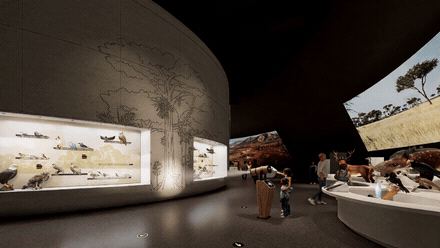
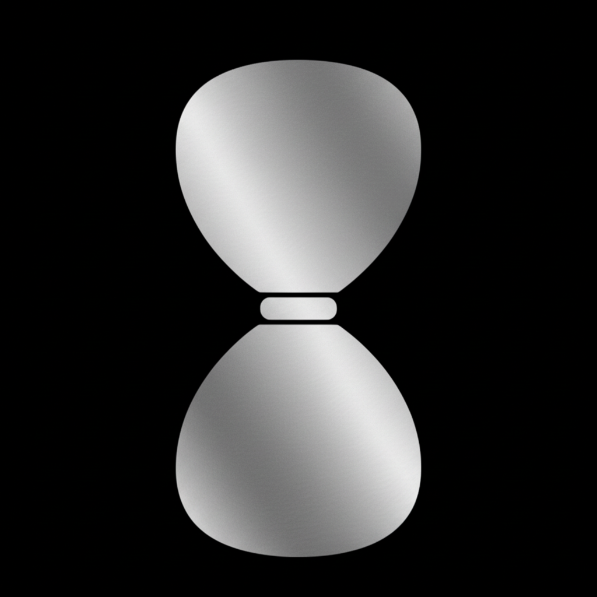
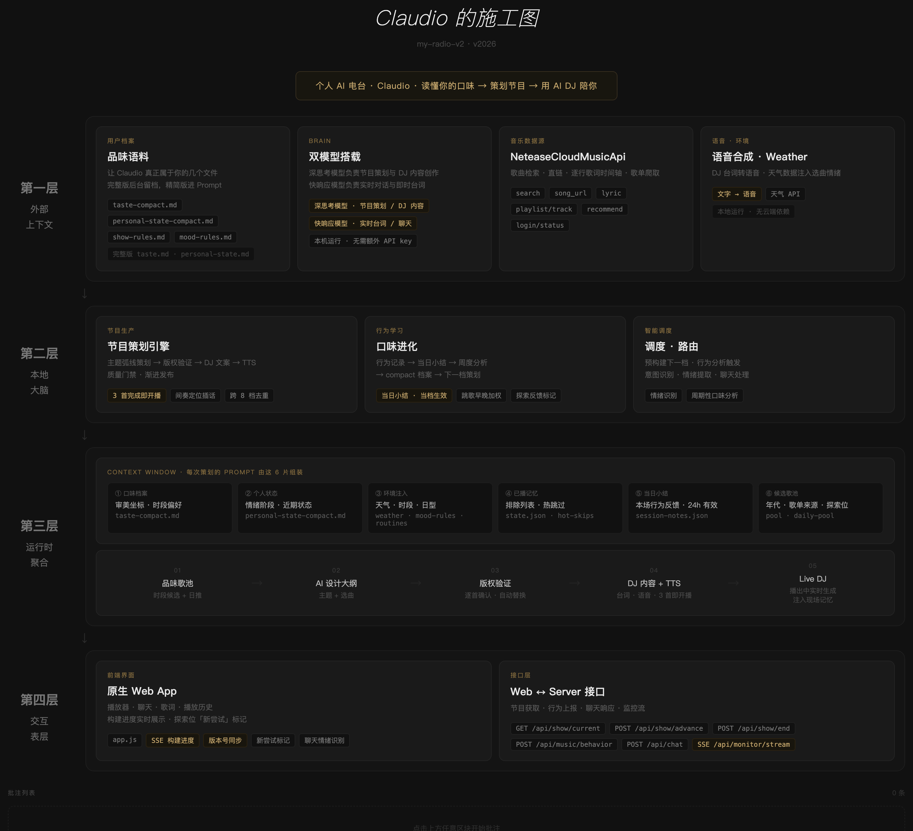

Demo 演示类
NO. 01
鸟类百科
科普内容 × 触摸屏交互
以鸟类为主题的交互科普应用，整体分为两个维度进行演示：（1）通过骨骼结构的组合拼接，以及鸟类的透视图展示，了解鸟类的身体结构特征和各部位的作用；（2）融合多个不同类型的鸟类于大场景中，以此引申介绍生活在不同环境的各类鸟类。
NO. 02
一棵树的垂直生态
科普内容 × 互动装置
展示空间以一棵树为媒介，一个望远镜装置为载体，通过操控望远镜对树上的生物进行观察，从而了解生命的垂直生态分布特色。

NO. 03
寻找第二个地球
天文科普 × 互动推理
以单观测点望远镜为载体，用「凌星法」寻找系外行星：转动望远镜把恒星对进准星、锁定后等待行星掠过恒星前方，捕捉那一瞬间的光变曲线下凹；再从下凹的深浅与重复周期，反推行星的大小、轨道远近与宜居可能——一步步还原天文学家发现「第二个地球」的真实推理链。
NO. 04
听见·天体
天文科普 × 声音调音台
把真实天体的 6 段电磁波段能量翻译成可听的声音：每个波段是一条声音轨道，强弱与角色由天体的真实能量结构决定。观众在 iPad 展台上触屏选波段、旋转旋钮为每段挑乐器，亲手把一个天体的能量「肖像」混成一段专属的 40 秒音乐，最后凝成一张天体声音黑胶卡。
NO. 05
光合作用互动实验台
博物馆横屏 × 自由实验
装置由实体灯光装置和透明柜组合而成，通过模拟中学实验看懂多个因素如何共同影响光合作用。观众可自由调节「光照」和「CO₂」两个变量，做两次实验、亲手对照——右上角的双曲线把两组条件叠在一起，鱼缸里的金鱼藻气泡、水体光泽随氧气量实时变化。
NO. 06
从泥土到巨兽
真 3D 化石 × 三幕考古叙事
3D 的恐龙化石科普体验，通过发现、组装、复活三幕了解恐龙结构的特点。在同一个挖掘坑里，先刷开围岩出土骨骼并逐一登记，再把它们按解剖部位拖回骨架原位，最后看这具骨架复活成血肉巨兽。
应用开发类
NO. 07
还能活多久
App
一款以倒计时为概念的本地记账工具。通过设置金额，观察和统计个人记录的消费习惯，实时换算出金额什么时候消耗完的类生存挑战工具。

NO. 08
Memory Sparks
Web 应用
一款融合多种交互形式的人生记录工具——地图标记、徒步轨迹、情绪记录、日记书写、照片与视频存储，都收纳于同一个空间。它以一段"星球探索"的故事为线索，引导你在记录的过程中，借由交互去觉察自己的情绪与念头，把零散的日常，归档成一份属于自己的人生档案。全部数据以知识库形式保存，支持一键迁移、随身带走；提供 U 盘便携版与本地网页版双形态，均可离线本地使用，记忆始终留在你自己手中。
NO. 09
私人电台 Claudio
Web 音乐
以「一个正在逐步认识你的电台主持人」为核心，Claudio 会在你每次打开的时候，结合当下的状态和听歌偏好，策划一期专属节目——有 DJ 口播、有主题弧线、有选曲逻辑。每跳过一首歌、说一句话，或把一首歌听完，它都在当场更新对你的理解。时间越长，了解越深。

点击放大